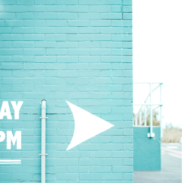

<main class="main"> 
  <div class="main_wrapper">
    <section class="first_block wrapper">
      <h2 class="first_block--title">Al Fashion Platform </h2>
      <picture class="picture"> 
        <source media-screen="(min-width: 360px)" srcset="./assets/01.jpg" type="image/svg+xml"/>
        <source media-screen="(min-width: 768px)" srcset="./assets/01.jpg" type="image/svg+xml"/>
        <source media="(min-width: 1366px)" srcset="./assets/01.jpg" type="image/svg+xml"/>
      </picture>
    </section>
    <section class="description_section wrapper"> 
      <div class="description_section--overview"> 
        <h3 class="description_section--h3">Project Overview</h3>
        <div class="description_section--p_wrapper">
          <p class="description_section--p">FashHanger is a bespoke sustainable high-fashion accessory company based out of Berlin,    currently  operated by Siesly and her sister Ashely. They needed help for a big rebrand and wanted to relaunch their   website.</p>
          <p class="description_section--p">Their goals were simple, create a unique e-commerce store that bring a wonderful shopping      experience at every stage of the buyer’s journey.</p>
        </div>
      </div>
    </section>
    <section class="first_section wrapper">
      <h3 class="first_section--h3">User Research and Personas </h3>
      <div class="first_section img"></div>
      <div class="first_section--p_wrapper">
        <p class="first_section--p">Who is your user? Indicate her KEY personality traits and help round out her overall image.</p>
        <p class="first_section--p">Originally, the personality section of this persona was based off the Myers Briggs personality   test.     According to the Myers Briggs, there are 16 potential user personality types. Our template integrates questions     from this   online personality test example into a series of sliding bar graphics. If you’re confused as to what the    sliders mean, check  out the Myers Briggs basics article.     </p>
      </div>
    </section>
    <section class="second_section wrapper"> 
      <h3 class="second_section--h3">Initial Sketches </h3>
      <div class="second_section img"></div>
      <div class="second_section--p_wrapper"> 
        <p class="second_section--p">In the beginning, It’s just about brainstorming.</p>
        <p class="second_section--p">I list out a jumble of words and draw tiny sketches related to what I’m working on (and find the parallels later). Personally, I prefer paper with a grid so I can convey things responsively. Most of the time perfection isn’t an issue and the sketches are just for me.</p>
      </div>
    </section>
    <section class="third_section wrapper"> 
      <h3 class="third_section--h3">Final Design </h3>
      <div class="third_section img"></div>
      <div class="third_section--p_wrapper"> 
        <p class="third_section--p">I played with adding a wireframe of the website flow that would lead you in to each screen. For each of those screens I added a floating footer that allows users to see where they are in that particular flow and jump around as needed.” We’re digging this InVision-made wireframe.</p>
      </div>
    </section>
  </div>
</main>